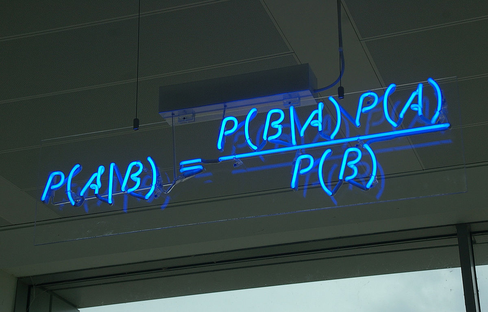

<!--- Carousel
    ================================================== -->
<header id="inicio">
	<div id="carouselExampleIndicators" class="carousel slide" data-ride="carousel">
		<ol class="carousel-indicators">
			<li data-target="#carouselExampleIndicators" data-slide-to="0" class="active"></li>
			<li data-target="#carouselExampleIndicators" data-slide-to="1"></li>
		</ol>
		<div class="carousel-inner" role="listbox">

			<div class="carousel-item active">
				
				<div class="carousel-caption d-none d-md-block">
					<h3>Teorema de Bayes.</h3>
					<h6>Teoría de la probabilidad</h6>
					<p>Expresa la probabilidad condicional de un evento aleatorio</p>
				</div>
			</div>

			<div class="carousel-item">
				
				<div class="carousel-caption d-none d-md-block">
					<h3>Tomas Bayes</h3>
					<h6>Matemático británico y ministro presbiteriano</h6>
					<p>(1702-1761)</p>
				</div>
			</div>

		</div>
		<a class="carousel-control-prev" href="#carouselExampleIndicators" role="button" data-slide="prev">
			<span class="carousel-control-prev-icon" aria-hidden="true"></span>
			<span class="sr-only">Previous</span>
		</a>
		<a class="carousel-control-next" href="#carouselExampleIndicators" role="button" data-slide="next">
			<span class="carousel-control-next-icon" aria-hidden="true"></span>
			<span class="sr-only">Next</span>
		</a>
	</div>
</header>